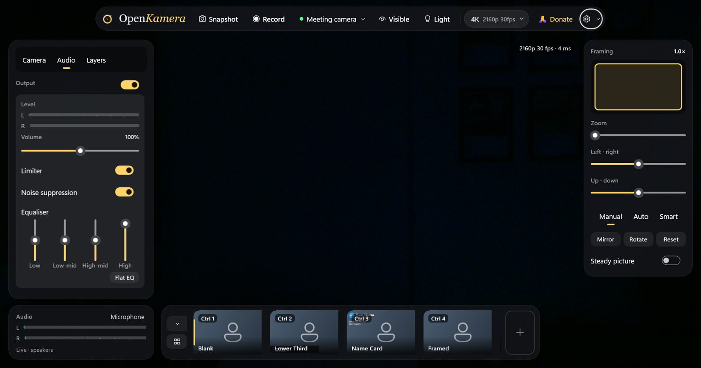
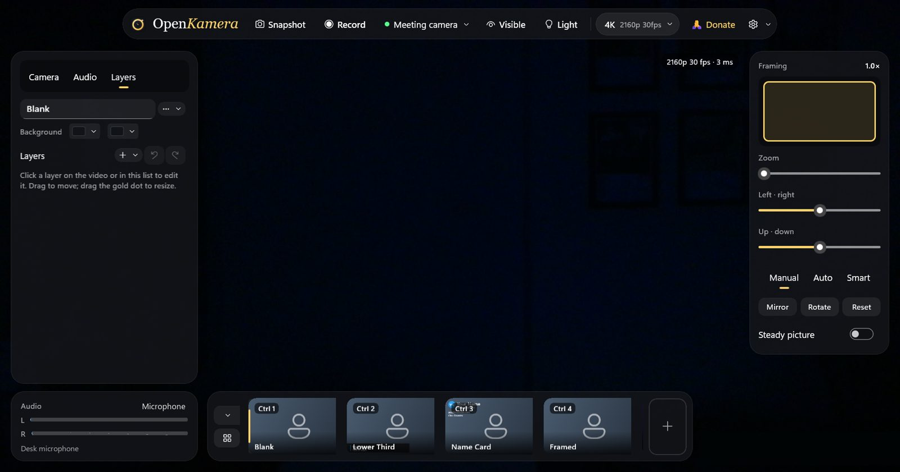
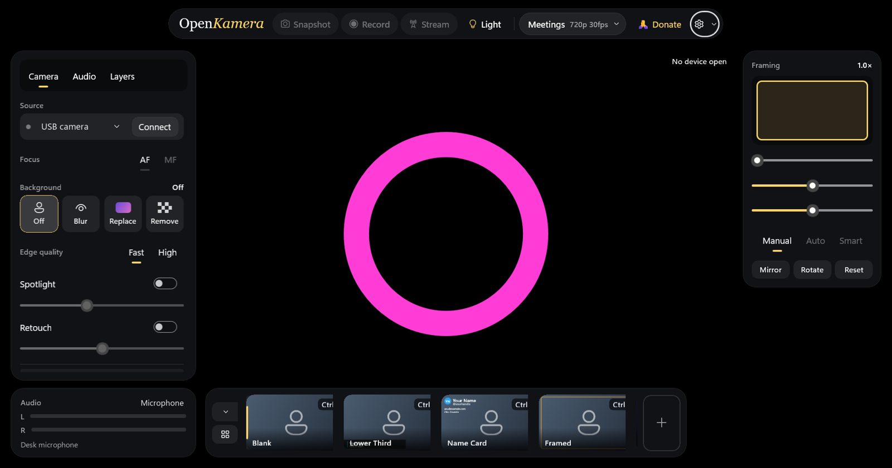

KISSIK is a free camera studio. Blur or replace your background, frame yourself automatically, add your name and logo, light your face with your own screen, and record it all — nothing locked, no watermark.
Windows 11 today · macOS, iPhone and Linux on the way
KISSIK—☐✕
0Accounts, watermarks or paywalls
4KUp to 3840×2160, 60 fps profiles
100%On-device processing
GPL-3.0Open source, every line
What it does today
Everything a great camera needs. Already built.
All of this runs on your own computer, on your own GPU. Your video never leaves your machine.
Background blur, replace, remove
On-device AI with two quality levels. Portrait blur to privacy blur, your own pictures, or a clean cut-out. Plus green or blue screen keying.
Auto-framing & steady picture
Keeps your face centred and the same size as you move, with a calm dead zone. Software stabilisation smooths a shaky camera.
Looks & LUTs
Brightness, contrast, warmth, vibrance and more. Built-in filters, your own .cube LUTs, and saved looks you can recall in one click.
Scenes
Names, logos, shapes, a round camera bubble, gradients. Drag-and-drop editor with undo, seven ready templates, shareable .okscene files.
Spotlight & retouch
Dim the room and lift you. Gentle, edge-aware skin smoothing tested on light to dark skin tones.
Record & snapshot
Exactly what you see — effects, looks and scenes included — as H.264 MP4 or PNG. Profiles from 720p to 4K, 60 fps and vertical 9:16.
Real camera controls
Focus, zoom, exposure, white balance, pan and tilt — read from your camera's real ranges. Works with any USB webcam, hot-plug included.
No strings
No sign-in, no watermark, no paywall, no tracking. Open source under GPL-3.0 — read every line.
Inside the app
The real app, as it is today.
Window pictures taken in KISSIK on Windows 11.
Camera Pick your camera, then Off, Blur, Replace or Remove the background. Fast or High edge quality, green screen, spotlight and retouch. Framing on the right: zoom, pan, Manual / Auto / Smart, mirror, rotate and steady picture.

Audio Level meters, volume, a limiter, noise suppression and a four-band equaliser.

Layers Each scene has its own background and layers. Click a layer to edit it, drag to move, drag the gold dot to resize. Scenes sit along the bottom with Ctrl 1–9 shortcuts.

Screen light Light in the top bar turns your screen into a key light: ring, bars or frame, any colour.
How it works
From your camera to your meeting.
Capture
Any webcam, at the best mode for your profile.
Understand
On-device AI finds you, frame by frame, on your GPU.
Shape
Background, looks, framing and steadying.
Compose
Your scene: name, logo, slides, camera bubble.
Share
Record, snapshot, or send to meeting apps as a camera.
Screen light
Your screen is your key light.
Turn your monitor into a soft, flattering light. Ring, bars or frame; seven looks from Daylight to Candlelight; 2200–9000 K. It stays out of your screen shares.